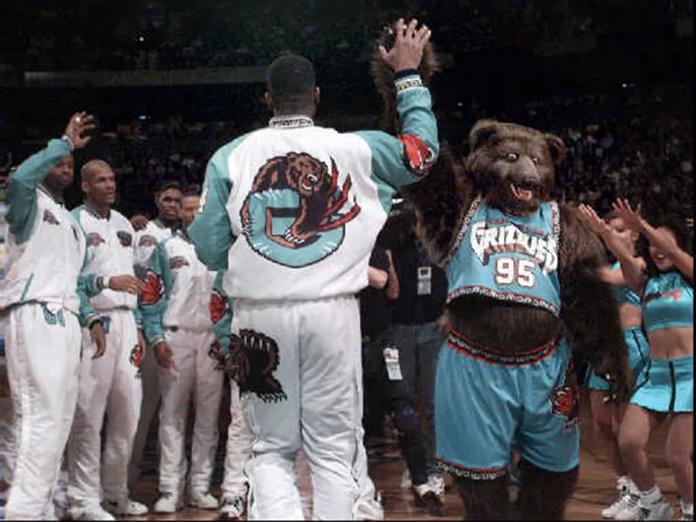

Vancouver Grizzlies
A Grizzlies csapat eredetileg Kanadában kezdett el játszani ekkor még Vancouver Grizzlies néven.A csapat 1995-ben jött létre viszont nem volt valami hosszú életű. Mint ahogyan az várható eleinte sokat szenvedtek a csapat 5 szezont is az utolsó helyen felyezett be.Összesen 101 meccset tudtak megnyerni és 359-cet vesztettek el. Ezek az évek után mival nagyon meggyengült a Kanadai dollár ezért a tulaj már csak vesztett a csapaton és ezért 2001-ben eladta a csapatot amelyet átvittek Memphisbe. A csapat máig a kevés Kanadai csapat tartozik.
A csapat eredményei a 6 év alatt
1995-96 15 győzelem 67 vereség
1996-97 14 győzelem 68 vereség
1997-98 19 győzelem 63 vereség
1998-99 8 győzelem 42 vereség
1999-00 22 győzelem 60 vereség
2000-01 23 győzelem 59 vereség